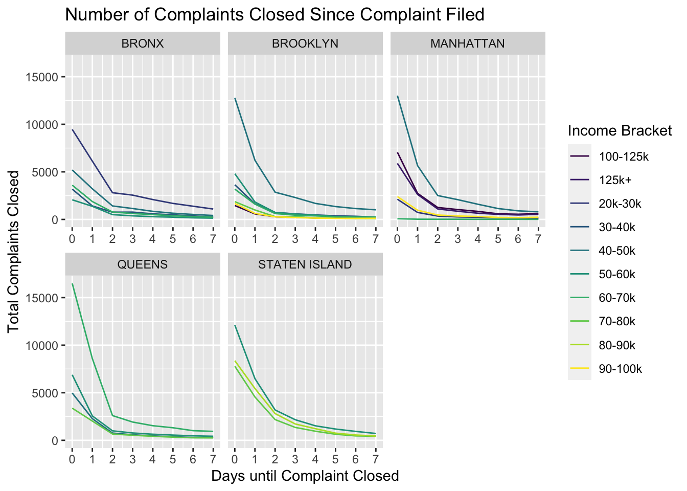

compiled
<<<<<<< HEAD #### Reading in and tidying first dataset with NYC 311 complaint data =======
Importing and merging 311 data
I downloaded the data from the NYC Open data website filtering for each boorough and time frame 2014 - 2018. Then I sampled from each dataset, containing 700k - 3 million rows, 100k data points in r, cleaned the created_date variable, and checked for equal sampling across the years.
Bronx
read_csv("311_bronx.csv")%>%
sample_n(100000, replace = F) %>%
separate(`Created Date`, into = c("month","day","year"), sep = "\\/" ) %>%
separate(year, into = c("year","time"), sep = " ") %>%
write_csv(., "bronx_311_100k.csv")
bronx<- read_csv("bronx_311_100k.csv")
table(bronx$year)Brooklyn
read_csv("311_brooklyn.csv") %>%
sample_n(100000, replace = F) %>%
separate(`Created Date`, into = c("month","day","year"), sep = "\\/" ) %>%
separate(year, into = c("year","time"), sep = " ") %>%
write_csv(., "brooklyn_311_100k.csv")
brooklyn<- read_csv("brooklyn_311_100k.csv")
table(brooklyn100k$year)Manhattan
read_csv("311_manhattan.csv") %>%
sample_n(100000, replace = F) %>%
separate(`Created Date`, into = c("month","day","year"), sep = "\\/" ) %>%
separate(year, into = c("year","time"), sep = " ") %>%
write_csv(., "manhattan_311_100k.csv")
manhattan<- read_csv("manhattan_311_100k.csv")
table(manhattan$year)Queens
read_csv("311_queens.csv")%>%
sample_n(100000, replace = F) %>%
separate(`Created Date`, into = c("month","day","year"), sep = "\\/" ) %>%
separate(year, into = c("year","time"), sep = " ") %>%
write_csv(., "queens_311_100k")
queens<- read_csv("queens_311_100k")
table(queens$year)Staten Island
read_csv("311_statenisland.csv") %>%
sample_n(100000, replace = F) %>%
separate(`Created Date`, into = c("month","day","year"), sep = "\\/" ) %>%
separate(year, into = c("year","time"), sep = " ") %>%
write_csv(., "statenisland_311_100k.csv")
statenisland <- read_csv("statenisland_311_100k.csv")
table(statenisland$year)Unspecified
read_csv("311_unspecified.csv") %>%
sample_n(100000, replace = F) %>%
separate(`Created Date`, into = c("month","day","year"), sep = "\\/" ) %>%
separate(year, into = c("year","time"), sep = " ") %>%
write_csv(.,"unspecified_311_100k")
unspec <- read_csv("unspecified_311_100k")
head(unspec)
table(unspec$year)Combinging all the datasets of 100k data points.
rbind(brooklyn, manhattan, queens, bronx, statenisland, unspec) %>%
rename(created_year = "year" , created_day = "day",created_month = "month",created_time = "time") %>%
janitor::clean_names() %>%
# write_csv(., "p8105nyc_311_100k.csv")NYC 311
Load and tidy the data. Data is 100k randomly sampled complaints from all neighborhoods across all NYC boroughs (600k total samples). Years sampled were 2014-2018.
Data downloaded from: https://wetransfer.com/downloads/f8c5d6c17483e279ff56018db9c44cc420191201000026/c5f48b
nyc <- read_csv(file = "./p8105nyc_311_100k.csv") %>%
janitor::clean_names()## Warning: 13949 parsing failures.
## row col expected actual file
## 100085 taxi_pick_up_location 1/0/T/F/TRUE/FALSE WEST 50 STREET AND BROADWAY './p8105nyc_311_100k.csv'
## 100150 taxi_pick_up_location 1/0/T/F/TRUE/FALSE JFK Airport './p8105nyc_311_100k.csv'
## 100172 taxi_pick_up_location 1/0/T/F/TRUE/FALSE 625 EAST 14 STREET MANHATTAN './p8105nyc_311_100k.csv'
## 100215 taxi_pick_up_location 1/0/T/F/TRUE/FALSE Other './p8105nyc_311_100k.csv'
## 100268 taxi_pick_up_location 1/0/T/F/TRUE/FALSE Other './p8105nyc_311_100k.csv'
## ...... ..................... .................. ............................. .........................
## See problems(...) for more details.nyc_tidy <- nyc %>%
filter(borough != "Unspecified") %>%
separate(closed_date,
into = c("closed_month","closed_day","closed_year"),
sep = "\\/" ) %>%
separate(closed_year,
into = c("closed_year","closed_time"),
sep = " ") %>%
mutate(
created_year = as.numeric(created_year),
created_month = as.numeric(created_month),
created_day = as.numeric(created_day),
city = as.factor(city),
status = as.factor(status),
borough = as.factor(borough),
agency = as.factor(agency),
complaint_type = as.factor(complaint_type),
community_board = as.factor(community_board),
open_complaint = ifelse(status == "Closed", yes = 0, no = 1),
# open_complaint = ifelse(is.na(closed_year), yes = 1, no = 0),
complaint_simp = case_when(
str_detect(complaint_type,
regex("street", ignore_case = TRUE))
|str_detect(complaint_type,
regex("sidewalk", ignore_case = TRUE))
|str_detect(complaint_type,
regex("curb", ignore_case = TRUE)) ~ "Street Condition",
str_detect(complaint_type,
regex("noise", ignore_case = TRUE)) ~ "Noise",
str_detect(complaint_type,
regex("heat", ignore_case = TRUE)) ~ "Heat",
str_detect(complaint_type,
regex("water", ignore_case = TRUE))
|str_detect(complaint_type,
regex("leak", ignore_case = TRUE))
|str_detect(complaint_type,
regex("plumbing", ignore_case = TRUE))
|str_detect(complaint_type,
regex("boiler", ignore_case = TRUE)) ~ "Water/plumbing",
str_detect(complaint_type,
regex("paint", ignore_case = TRUE)) ~ "Paint/Plaster",
str_detect(complaint_type,
regex("asbestos", ignore_case = TRUE))
|str_detect(complaint_type,
regex("lead", ignore_case = TRUE))
|str_detect(complaint_type,
regex("hazard", ignore_case = TRUE))
|str_detect(complaint_type,
regex("mold", ignore_case = TRUE)) ~ "Hazard Material",
str_detect(complaint_type,
regex("elevator", ignore_case = TRUE))
|str_detect(complaint_type,
regex("maintenance", ignore_case = TRUE))
|str_detect(complaint_type,
regex("electric", ignore_case = TRUE))
|str_detect(complaint_type,
regex("stairs", ignore_case = TRUE))
|str_detect(complaint_type,
regex("window", ignore_case = TRUE))
|str_detect(complaint_type,
regex("appliance", ignore_case = TRUE)) ~ "Maintenance",
str_detect(complaint_type,
regex("sanita", ignore_case = TRUE))
|str_detect(complaint_type,
regex("rodent", ignore_case = TRUE))
|str_detect(complaint_type,
regex("dirty", ignore_case = TRUE))
|str_detect(complaint_type,
regex("sew", ignore_case = TRUE))
|str_detect(complaint_type,
regex("standing water", ignore_case = TRUE)) ~ "Sanitation",
str_detect(complaint_type,
regex("tree", ignore_case = TRUE)) ~ "Tree",
str_detect(complaint_type,
regex("parking", ignore_case = TRUE))
|str_detect(complaint_type,
regex("car", ignore_case = TRUE))
|str_detect(complaint_type,
regex("drive", ignore_case = TRUE))
|str_detect(complaint_type,
regex("vehicle", ignore_case = TRUE))
|str_detect(complaint_type,
regex("traffic", ignore_case = TRUE)) ~ "Car/Traffic",
str_detect(complaint_type,
regex("air", ignore_case = TRUE)) ~ "Air Quality",
str_detect(complaint_type,
regex("collection", ignore_case = TRUE)) ~ "Collection",
str_detect(complaint_type,
regex("homeless", ignore_case = TRUE))
|str_detect(complaint_type,
regex("panhandling", ignore_case = TRUE)) ~ "Homeless"),
health_complaint = ifelse(
complaint_simp %in% c("Heat", "Water/Plumbing", "Hazard Material", "Sanitation", "Air Quality"), yes = 1, no = 0),
complaint_simp = as.factor(complaint_simp),
open_health_complaint = case_when(
open_complaint == 1 & health_complaint == 1 ~ 1,
open_complaint == 0 | health_complaint == 0 ~ 0
),
# openCorr = ifelse(status == "Closed", yes = 0, no = 1),
status = as.factor(status)
)## Warning: Expected 2 pieces. Additional pieces discarded in 489924 rows [1,
## 2, 3, 4, 5, 6, 7, 8, 9, 11, 12, 13, 14, 15, 16, 17, 18, 20, 21, 22, ...].Reading in and tidying second dataset with community district data
Used skimr::skim, colnames, and levels(factor(nyc$complaint_type)) to investigate and tidy the data. New variables were created to establish a binary status for closed (0) or open (1) complaints.
Key variables include: year, borough, community_board, complaint_type, and status.
Newly added variables include:
complaint_simp- based on key words, condenses complaint types into the following categories: Air Quality, Car/Traffic, Collection, Hazard Material, Heat, Homeless, Maintenance, Noise, Paint/Plaster, Sanitation, Street Condition, Tree, and Water/plumbing.health_complaint- binary yes (1) or no (0), based on health associated categories withincomplaint_simp.open_health_complaint- binary categorization, either health complaint that is open (1), or non-health related complaint or closed health complaint (0).open_complaint- binary categorization, closedstatus(0), open (1)
American Commmunity Survey, income and population characteristics:
We also included aggregated American Commmunity Survey (ACS) data in our analysis. The American Community Survey is conducted annually across the United States by the US Census Bureau to 3.5 million households. ACS provides annual and 5-year estimates of information by graphical region, including NYC Community Districts. We pulled population 5-year estimates (2013-2017) of total population, percent non-Hispanic White, percent non-Hispanic Black, percent Hispanic, and median income of each community district.
The variable, community_board, will be used to left join NYC 311 data with income and population characteristics data sourced from American Community Survey by Community District.
inc_df = read_csv("./Med_income_2017.csv") %>%
janitor::clean_names() %>%
mutate(
pop_1000s = round(total_population/1000, 0),
inc_1000s = round(median_income/1000, 1),
income_bracket = case_when(
median_income >= 20000 & median_income <= 30000 ~ "20k-30k",
median_income > 30000 & median_income <= 40000 ~ "30-40k",
median_income > 40000 & median_income <= 50000 ~ "40-50k",
median_income > 50000 & median_income <= 60000 ~ "50-60k",
median_income > 60000 & median_income <= 70000 ~ "60-70k",
median_income > 70000 & median_income <= 80000 ~ "70-80k",
median_income > 80000 & median_income <= 90000 ~ "80-90k",
median_income > 90000 & median_income <= 100000 ~ "90-100k",
median_income > 100000 & median_income <= 125000 ~ "100-125k",
median_income > 125000 & median_income <= 150000 ~ "125k+",
),
income_bracket = as.factor(income_bracket)
)
# adding income to data and removing any observations that do not have a specific community board to link to income
nyc_inc = left_join(nyc_tidy, inc_df, by = "community_board") ## Warning: Column `community_board` joining factor and character vector,
## coercing into character vectorExploratory analysis: Visualizations, summaries, and exploratory statistical analyses. Justify the steps you took, and show any major changes to your ideas.
Final Plots:
Proportion open complaints per neighborhood
We first wanted to consider if there were differences in the number, type, or status of complaints across each neighborhood.
nyc_plots <- nyc_inc %>%
group_by(area_name, created_year) %>%
add_count(area_name, name = "number_complaints") %>%
mutate(
num_unsolved = sum(open_complaint),
num_health_complaint = sum(health_complaint),
num_open_health = sum(open_health_complaint)
) %>%
select(-unique_key, -city, -park_borough, -agency, -agency_name, -descriptor, -incident_zip, -incident_address, -street_name, -cross_street_1, -cross_street_2, -intersection_street_1, -intersection_street_2, -landmark, -facility_type, -resolution_description, -resolution_action_updated_date, -bbl, -x_coordinate_state_plane, -y_coordinate_state_plane, -open_data_channel_type, -park_facility_name, -vehicle_type, -taxi_company_borough, -taxi_pick_up_location, -bridge_highway_name, -bridge_highway_direction, -bridge_highway_segment, -latitude, -longitude, -location, -road_ramp, -location_type, -address_type, -map_id)
nyc_plots %>%
select(area_name, borough, complaint_simp, open_complaint) %>%
group_by(area_name, borough, complaint_simp, open_complaint) %>%
summarize(n = n()) %>%
pivot_wider(names_from = open_complaint, values_from = n) %>%
rename(closed = `0`,
open = `1`) %>%
mutate(proportion_open = open/(open + closed),
total = (open + closed)) %>%
filter(!is.na(area_name), !is.na(total), !is.na(complaint_simp)) %>%
ggplot(aes(x = area_name, y = total, fill = complaint_simp)) +
geom_col() +
facet_wrap(~borough, scales = "free_x") +
theme(axis.text.x = element_text(angle = 75, hjust = 1)) +
xlab("Neighborhood") +
ggtitle("Total and Type of Complaints Across Neighborhoods") +
ylab("Total Complaints") +
labs(fill = "Complaint Type") +
scale_fill_viridis(discrete = TRUE)## Adding missing grouping variables: `created_year`## Warning: Factor `complaint_simp` contains implicit NA, consider using
## `forcats::fct_explicit_na`
## Warning: Factor `complaint_simp` contains implicit NA, consider using
## `forcats::fct_explicit_na`
## Warning: Factor `complaint_simp` contains implicit NA, consider using
## `forcats::fct_explicit_na`
## Warning: Factor `complaint_simp` contains implicit NA, consider using
## `forcats::fct_explicit_na`Looking at the total and type of complaint shows Inwood/Washington Heights to have a much greater number of complaints compared to the rest of Manhattan, many of which are related to Noise, Heat, Water/Plumbing, and Trees (possibly because of Inwood Park). Many more complaints are made in the “safer” area of the Bronx near the VA hospital, Fordham University, and Van Cortland Park (Highbridge/Concourse, Fordham/University Heights, Kingsbridge Heights/Bedford Park). More complaints are raised in St. George/Stapleton in Staten Island than other areas because it is a more populated area of the island in addition to being the more affluent area of the island.
We next considered how many of the total complaints in each neighborhood have been closed.
nyc_plots %>%
select(area_name, borough, complaint_simp, open_complaint) %>%
group_by(area_name, borough, complaint_simp, open_complaint) %>%
summarize(n = n()) %>%
pivot_wider(names_from = open_complaint, values_from = n) %>%
rename(closed = `0`,
open = `1`) %>%
mutate(proportion_open = open/(open + closed)) %>%
filter(!is.na(area_name), !is.na(proportion_open), !is.na(complaint_simp)) %>%
ggplot(aes(x = area_name, y = proportion_open, fill = complaint_simp)) +
geom_col() +
facet_wrap(~borough, scales = "free_x") +
theme(axis.text.x = element_text(angle = 75, hjust = 1)) +
xlab("Neighborhood") +
ggtitle("Proportion and Type of Complaints that are Open per Neighborhood") +
ylab("Proportion Open") +
labs(fill = "Complaint Type") +
scale_fill_viridis(discrete = TRUE)## Adding missing grouping variables: `created_year`## Warning: Factor `complaint_simp` contains implicit NA, consider using
## `forcats::fct_explicit_na`
## Warning: Factor `complaint_simp` contains implicit NA, consider using
## `forcats::fct_explicit_na`
## Warning: Factor `complaint_simp` contains implicit NA, consider using
## `forcats::fct_explicit_na`
## Warning: Factor `complaint_simp` contains implicit NA, consider using
## `forcats::fct_explicit_na`The above plot demonstrates that the highest proportion of open cases are complaints involving a tree. Air Quality and Car/Traffic are also addressed less than other complaints across all neighborhoods. Notably, Hazard Material complaints remain unaddressed in Morrisania/Crotona, Rockaway/Broad Channel and Coney Island. Depending on the neighborhood, Homeless complaints are typically left open.
Proportion of open complaints by income bracket
Because we saw a difference in the number of complaints and open complaints across each neighborhood, we wanted to understand how complaints are distributed based on income_bracket.
p <- nyc_plots %>%
filter(!is.na(income_bracket)) %>%
group_by(income_bracket, borough, open_complaint) %>%
summarize(n = n()) %>%
pivot_wider(names_from = open_complaint, values_from = n) %>%
rename(closed = '0',
open = '1')
p %>% mutate(proportion = (open/(open + closed))) %>%
ggplot(aes(x = income_bracket, y = proportion, fill = income_bracket)) +
geom_col() +
facet_wrap(~borough, scales = "free_x") +
ggtitle("Proportion of Open Cases Within Each Income Bracket") +
xlab("Income Bracket") +
ylab("Proportion Open") +
theme(axis.text.x = element_text(angle = 60, hjust = 1)) +
scale_fill_viridis(discrete = TRUE) +
labs(fill = "Income Bracket")Surprisingly, across all boroughs (except Brooklyn) the proportion of open cases is greater in higher income groups compared to lower income groups.
We found the total number of cases per income bracket reflected the economic distribution of each neighborhood and was not informative as to which group filed the most complaints. As such, we did not include this plot.
Proportion of health related complaints by each income category:
Even though total complaint number was uninformative, we wanted to understand if a type of complaint was more prevalent within an income bracket. The following is a plot of the proportion of health related complaints (which includes: Air Quality, Heat, Hazard Material, Sanitation, and Water/Plumbing) out of all complaints filed.
h <- nyc_plots %>%
filter(!is.na(income_bracket)) %>%
group_by(income_bracket, borough, health_complaint) %>%
summarize(n = n()) %>%
pivot_wider(names_from = health_complaint, values_from = n) %>%
rename(other = '0',
health_related = '1')
h %>% mutate(proportion = (health_related/(health_related + other))) %>%
ggplot(aes(x = income_bracket, y = proportion, fill = income_bracket)) +
geom_col() +
facet_wrap(~borough, scales = "free_x") +
ggtitle("Proportion of Health Related Complaints Within Each Income Bracket") +
xlab("Income Bracket") +
ylab("Proportion Health Related") +
labs(fill = "Income Bracket") +
theme(axis.text.x = element_text(angle = 60, hjust = 1)) +
scale_fill_viridis(discrete = TRUE)
It is apparent that health related complaints are proportionally higher in lower income groups across all boroughs of NYC.
Income across complaint categories
Median income of each complaint category:
Given the difference in the proportion of health complaints across income brackets, we wanted to further investigate what incomes are associated with a given complaint.
nyc_plots %>%
filter(!is.na(median_income),
!is.na(complaint_simp)) %>%
# mutate(complaint_simp = fct_reorder(complaint_simp, median_income)) %>%
ggplot(aes(x = complaint_simp,
y = (median_income/1000),
fill = complaint_simp)) +
geom_boxplot() +
theme(axis.text.x = element_text(angle = 60, hjust = 1),
legend.position = "none") +
scale_y_continuous(breaks = scales::pretty_breaks(n = 10)) +
ylab("Median Income (thousands)") +
xlab("Complaint Category") +
ggtitle("Median Income of Community District where Complaint Category Occurs") +
scale_fill_viridis(discrete = TRUE)
This plot demonstrates that neighborhoods with higher median incomes file more complaints relating to Homeless. Neighborhoods with lower median incomes file more complaints related to Heat, Maintenance, and Paint/Plaster.
Status of complaints given race or income level
Open status given Community District Population
One initial question we wanted to address was whether or not the status of complaints was more readily addressed given population characteristics of a neighborhood.
The following is a plot of the proportion of cases that are open given the racial percentage of a community district.
r <- nyc_plots %>%
pivot_longer(cols = per_black_nh:per_other, names_to = "race", values_to = "percent_pop") %>%
filter(!is.na(race),
!is.na(percent_pop)) %>%
group_by(race, borough, percent_pop, open_complaint) %>%
summarize(n = n()) %>%
pivot_wider(names_from = open_complaint, values_from = n) %>%
rename(closed = '0',
open = '1')
r %>% mutate(proportion = (open/(open + closed))) %>%
ggplot(aes(x = percent_pop, y = proportion, color = race)) +
geom_point() +
geom_smooth(se = FALSE) +
xlab("Percentage of Community District Population") +
ylab("Proportion Open") +
ggtitle("Unresolved Complaints as a Function of Neighborhood Population") +
scale_color_viridis(name = "Race", labels = c("Black", "Hispanic", "Other", "White"), discrete = TRUE)## `geom_smooth()` using method = 'loess' and formula 'y ~ x'
The only trend we were able to discern is a decrease is the proportion of open cases as the percent hispanic population increases.
Days to close given income level
We were also curious whether the income bracket of a neighborhood affected the number of days until a complaint was closed.
d <- nyc_plots %>%
filter(status == "Closed") %>%
mutate(closed_year = as.numeric(closed_year),
closed_month = as.numeric(closed_month),
closed_day = as.numeric(closed_day)) %>%
filter(closed_year != 2047) %>%
mutate(diff_year = abs(closed_year - created_year),
diff_month = abs(closed_month - created_month),
diff_day = abs(closed_day - created_day),
diff_dayt = abs(diff_year*365 + diff_month*30 + diff_day)) %>%
select(income_bracket,
median_income,
borough,
diff_dayt,
diff_year,
diff_month,
diff_day) %>%
filter(diff_dayt <= 7,
!is.na(income_bracket)) %>%
group_by(borough, income_bracket, diff_dayt) %>%
summarize(n = n()) %>%
pivot_wider(names_from = diff_dayt, values_from = n) %>%
rename(day0 = `0`,
day1 = `1`,
day2 = `2`,
day3 = `3`,
day4 = `4`,
day5 = `5`,
day6 = `6`,
day7 = `7`)## Adding missing grouping variables: `area_name`, `created_year`d$total <- d %>%
ungroup() %>%
select(starts_with("day")) %>%
rowSums(.)
d %>%
pivot_longer(cols = day0:day7, names_to = "day", values_to = "day_total") %>%
mutate(day = recode(day, day0 = 0, day1 = 1, day2 = 2, day3 = 3, day4 = 4, day5 = 5, day6 = 6, day7 = 7),
proportion = day_total/total) %>%
ggplot(aes(x = day, y = proportion, group = income_bracket, color = income_bracket)) +
geom_line() +
facet_wrap(~borough, scales = "free_x") +
scale_x_continuous(breaks = scales::pretty_breaks(n = 7)) +
scale_color_viridis(discrete = TRUE) +
xlab("Days until Complaint Closed") +
ylab("Proportion Complaints Closed") +
ggtitle("Proportion of Complaints Closed Since Complaint Filed") +
labs(color = "Income Bracket")
Looking at the total number of complaints largely reflects a difference in the total number of complaints filed by each group. We then looked at the proportion of complaints closed per day within an income bracket.
nyc_plots %>%
filter(status == "Closed") %>%
mutate(closed_year = as.numeric(closed_year),
closed_month = as.numeric(closed_month),
closed_day = as.numeric(closed_day)) %>%
filter(closed_year != 2047) %>%
mutate(diff_year = abs(closed_year - created_year),
diff_month = abs(closed_month - created_month),
diff_day = abs(closed_day - created_day),
diff_dayt = abs(diff_year*365 + diff_month*30 + diff_day)) %>%
select(income_bracket,
median_income,
borough,
diff_dayt,
diff_year,
diff_month,
diff_day) %>%
filter(diff_dayt <= 7,
!is.na(income_bracket)) %>%
group_by(borough, income_bracket, diff_dayt) %>%
summarize(n = n()) %>%
ggplot(aes(x = diff_dayt, y = n, group = income_bracket, color = income_bracket)) +
geom_line() +
facet_wrap(~borough, scales = "free_x") +
scale_x_continuous(breaks = scales::pretty_breaks(n = 7)) +
scale_color_viridis(discrete = TRUE) +
xlab("Days until Complaint Closed") +
ylab("Total Complaints Closed") +
ggtitle("Number of Complaints Closed Since Complaint Filed") +
labs(color = "Income Bracket")## Adding missing grouping variables: `area_name`, `created_year`
This revealed no difference in the number of days to close a complaint given the income bracket of a neighborhood.
STEPHEN, descibe plotly
Aggregating data to community district and year level
To examine the effect of community district level variables on total number of complaints we must first aggregate to the community district level. We are also interested in how year effects the number of complaints in each district so we group by year as well to produce complaint totals for each year and community district.
Once we have complaint totals, we do not want individual complaint information anymore. We select distinct year * community district observations.
# grouping by community district and year
cb_group_year = nyc_inc %>%
filter(is.na(median_income) == FALSE) %>%
group_by(community_board, created_year) %>%
add_count(community_board, name = "number_complaints") %>%
mutate(
num_unsolved = sum(open_complaint),
num_health_complaint = sum(health_complaint),
num_open_health = sum(open_health_complaint)
) %>%
select(number_complaints, num_unsolved, num_open_health, everything())
########## including year
cb_group_year_distinct = cb_group_year %>%
select(community_board, number_complaints, inc_1000s, num_unsolved, num_health_complaint, borough, per_black_nh, per_hisp, per_white_nh, median_income, num_open_health, created_year, pop_1000s) %>%
distinct() %>%
arrange(community_board) %>%
mutate(
borough = relevel(borough, ref = "MANHATTAN")
)
cb_group_year_distinct = within(cb_group_year_distinct, borough <- relevel(borough, ref = "MANHATTAN"))
manhanttan_distinct = cb_group_year_distinct %>%
filter(borough == "MANHATTAN")
brooklyn_distinct = cb_group_year_distinct %>%
filter(borough == "BROOKLYN")
bronx_distinct = cb_group_year_distinct %>%
filter(borough == "BRONX")
queens_distinct = cb_group_year_distinct %>%
filter(borough == "QUEENS")
SI_distinct = cb_group_year_distinct %>%
filter(borough == "STATEN ISLAND")What neighborhood characteristics effect number and type of complaints in each community district?
We conducted linear models to examine predictors of number of complaints from 2014-2018 per community district. Our three outcomes were:
- Total number of complaints
- Number of health complaints
- Number of unresolved complaints.
We looked at these categories of complaints from 2014-2018 predicted by year, and community district level variables including median income (in the 1000s), total population (in the 1000s), percent non-hispanic black and percent Hispanic. For outcomes 1 and 2 we included number of unresolved complaints as a predictor as well.
As we have equal complaints across borough we startified our analysis to predict number of complaints within each borough.
1) Number of complaints by NYC community district:
A) Bronx
# number of complaints
options(scipen = 5)
nom_comp_bronx = lm(number_complaints ~ inc_1000s + num_unsolved + per_black_nh + per_hisp + pop_1000s +created_year, data = bronx_distinct)
summary(nom_comp_bronx) %>% broom::tidy() %>% knitr::kable()| term | estimate | std.error | statistic | p.value |
|---|---|---|---|---|
| (Intercept) | -202744.174591 | 47945.281998 | -4.228657 | 0.0000933 |
| inc_1000s | -28.726021 | 12.195282 | -2.355503 | 0.0222307 |
| num_unsolved | -4.486933 | 2.353502 | -1.906492 | 0.0620144 |
| per_black_nh | -17.477769 | 9.496429 | -1.840457 | 0.0713027 |
| per_hisp | -23.143901 | 13.319895 | -1.737544 | 0.0880995 |
| pop_1000s | 15.553096 | 1.070756 | 14.525340 | 0.0000000 |
| created_year | 101.928668 | 23.756619 | 4.290538 | 0.0000760 |
summary(nom_comp_bronx) %>% broom::glance() %>% knitr::kable()| r.squared | adj.r.squared | sigma | statistic | p.value | df |
|---|---|---|---|---|---|
| 0.8310758 | 0.8119523 | 236.84 | 43.45835 | 0 | 7 |
B) Brooklyn
# Brooklyn
nom_comp_brook = lm(number_complaints ~ inc_1000s + num_unsolved + per_black_nh + per_hisp + pop_1000s +created_year, data = brooklyn_distinct)
summary(nom_comp_brook) %>% broom::tidy() %>% knitr::kable()| term | estimate | std.error | statistic | p.value |
|---|---|---|---|---|
| (Intercept) | -190528.955935 | 31818.4774261 | -5.987997 | 0.0000001 |
| inc_1000s | 2.882396 | 1.1855879 | 2.431195 | 0.0172020 |
| num_unsolved | -3.544975 | 1.4453365 | -2.452699 | 0.0162738 |
| per_black_nh | 4.848914 | 0.8915716 | 5.438614 | 0.0000005 |
| per_hisp | 4.170561 | 1.6689790 | 2.498870 | 0.0144307 |
| pop_1000s | 6.938757 | 0.8485194 | 8.177488 | 0.0000000 |
| created_year | 94.406506 | 15.7640777 | 5.988711 | 0.0000001 |
summary(nom_comp_brook) %>% broom::glance() %>% knitr::kable()| r.squared | adj.r.squared | sigma | statistic | p.value | df |
|---|---|---|---|---|---|
| 0.6449032 | 0.6192335 | 183.8176 | 25.12318 | 0 | 7 |
C) Manhattan
# Manhattan
nom_comp_manhattan = lm(number_complaints ~ inc_1000s + num_unsolved + per_black_nh + per_hisp + pop_1000s +created_year, data = manhanttan_distinct)
summary(nom_comp_manhattan) %>% broom::tidy() %>% knitr::kable()| term | estimate | std.error | statistic | p.value |
|---|---|---|---|---|
| (Intercept) | 53119.003997 | 64689.6669892 | 0.8211358 | 0.4149313 |
| inc_1000s | 2.562733 | 2.3348619 | 1.0975950 | 0.2769173 |
| num_unsolved | 16.561590 | 3.5875617 | 4.6163918 | 0.0000221 |
| per_black_nh | 1.385217 | 3.8317954 | 0.3615061 | 0.7190348 |
| per_hisp | 21.377882 | 4.1291053 | 5.1773642 | 0.0000029 |
| pop_1000s | 3.379611 | 0.8127052 | 4.1584712 | 0.0001071 |
| created_year | -26.482032 | 32.1427930 | -0.8238871 | 0.4133789 |
summary(nom_comp_manhattan) %>% broom::glance() %>% knitr::kable()| r.squared | adj.r.squared | sigma | statistic | p.value | df |
|---|---|---|---|---|---|
| 0.7021796 | 0.6713706 | 305.3685 | 22.79137 | 0 | 7 |
D) Queens
# Queens
nom_comp_queens = lm(number_complaints ~ inc_1000s + num_unsolved + per_black_nh + per_hisp + pop_1000s +created_year, data = queens_distinct)
summary(nom_comp_queens) %>% broom::tidy() %>% knitr::kable()| term | estimate | std.error | statistic | p.value |
|---|---|---|---|---|
| (Intercept) | -130275.0280769 | 34097.2062606 | -3.8206951 | 0.0003070 |
| inc_1000s | -0.4054934 | 2.6756857 | -0.1515475 | 0.8800281 |
| num_unsolved | 8.0661850 | 1.1453378 | 7.0426251 | 0.0000000 |
| per_black_nh | -5.0760521 | 1.4045824 | -3.6139225 | 0.0005998 |
| per_hisp | 0.3088721 | 1.6961179 | 0.1821053 | 0.8560848 |
| pop_1000s | 4.6019048 | 0.7623587 | 6.0364040 | 0.0000001 |
| created_year | 64.7110298 | 16.9056988 | 3.8277643 | 0.0002999 |
summary(nom_comp_queens) %>% broom::glance() %>% knitr::kable()| r.squared | adj.r.squared | sigma | statistic | p.value | df |
|---|---|---|---|---|---|
| 0.8308769 | 0.8147699 | 182.1941 | 51.58495 | 0 | 7 |
E) Staten Island
# SI
nom_comp_SI = lm(number_complaints ~ inc_1000s + num_unsolved + per_black_nh +created_year, data = SI_distinct)
summary(nom_comp_SI) %>% broom::tidy() %>% knitr::kable()| term | estimate | std.error | statistic | p.value |
|---|---|---|---|---|
| (Intercept) | -1328232.051623 | 131138.704917 | -10.128452 | 0.0000014 |
| inc_1000s | 105.342625 | 25.436644 | 4.141373 | 0.0020074 |
| num_unsolved | 3.786141 | 2.269629 | 1.668176 | 0.1262426 |
| per_black_nh | 257.458351 | 38.185243 | 6.742352 | 0.0000509 |
| created_year | 656.403425 | 65.025563 | 10.094544 | 0.0000015 |
summary(nom_comp_SI) %>% broom::glance() %>% knitr::kable()| r.squared | adj.r.squared | sigma | statistic | p.value | df |
|---|---|---|---|---|---|
| 0.9660939 | 0.9525315 | 354.0233 | 71.23303 | 0.0000003 | 5 |
Residuals
par(mfrow = c(2,3))
plot(nom_comp_bronx, which = 1, main = "Bronx
")
plot(nom_comp_brook, which = 1, main = "Brooklyn
")
plot(nom_comp_manhattan, which = 1, main = "Manhattan
")
plot(nom_comp_queens, which = 1, main = "Queens
")
plot(nom_comp_SI, which = 1, main = "Staten Island
")
Comments:
In the Bronx, on average, for each additional year we see 102 more complaints in each community district, for each additional 1000 people in a CD we see 16 more complaints, and for each $1000 increase in median income we see 29 fewer complaints.
In Manhattan and Queens we see an effect on total number of complaints by number of unresolved complaints. On average, for each additional unresolved complaint people in Manhattan and Queens will have 17 and 8 more complaints respectively.
Based on the adjusted R-squared values, number of complaints in a CD range from 67.14% in Manhattan to 95.25% in Staten Island predicted by this combination of variables. Residuals appear to follow normal distributions.
<<<<<<< HEAD
Comments:
Complaints were determined to be health related if they were about heat, hot water, sanitary conditions, poor air quality, or hazardous materials.
In Manhattan and Queens we see a significant effect on total number of health related complaints by median income of the CD. On average, for each $1000 increase in median income we see -2 more health-related complaints in Manhattan 3 fewer health-related complaints in Queens.
Based on the adjusted R-squared values, number of health related complaints in a CD range from 56.84% in Brooklyn to 97.01% in Staten Island predicted by this combination of variables. The plots of the residuals indicate that future analyses should increase or adjust the predictors to better fit the data.
3) Number of unresolved complaints by NYC community district:
A) Bronx
# number of complaints
options(scipen = 5)
nom_unres_bronx = lm(num_unsolved ~ inc_1000s + per_black_nh + per_hisp + pop_1000s +created_year, data = bronx_distinct)
summary(nom_unres_bronx) %>% broom::tidy() %>% knitr::kable()| term | estimate | std.error | statistic | p.value |
|---|---|---|---|---|
| (Intercept) | -8464.2587902 | 2521.6476362 | -3.3566382 | 0.0014506 |
| inc_1000s | 0.7539570 | 0.6976440 | 1.0807189 | 0.2846252 |
| per_black_nh | 0.9066669 | 0.5350553 | 1.6945293 | 0.0959252 |
| per_hisp | -0.0757988 | 0.7701058 | -0.0984265 | 0.9219581 |
| pop_1000s | 0.1986616 | 0.0556984 | 3.5667380 | 0.0007668 |
| created_year | 4.1833333 | 1.2501239 | 3.3463351 | 0.0014959 |
summary(nom_unres_bronx) %>% broom::glance() %>% knitr::kable()| r.squared | adj.r.squared | sigma | statistic | p.value | df |
|---|---|---|---|---|---|
| 0.7071103 | 0.6799909 | 13.69442 | 26.07395 | 0 | 6 |
B) Brooklyn
# Brooklyn
nom_unres_brook = lm(num_unsolved ~ inc_1000s + per_black_nh + per_hisp + pop_1000s +created_year, data = brooklyn_distinct)
summary(nom_unres_brook) %>% broom::tidy() %>% knitr::kable()| term | estimate | std.error | statistic | p.value |
|---|---|---|---|---|
| (Intercept) | -10928.0495784 | 2085.1502142 | -5.240893 | 0.0000012 |
| inc_1000s | 0.2852217 | 0.0839158 | 3.398904 | 0.0010368 |
| per_black_nh | 0.3263226 | 0.0571163 | 5.713300 | 0.0000002 |
| per_hisp | 0.1305054 | 0.1251846 | 1.042504 | 0.3001692 |
| pop_1000s | 0.4615274 | 0.0395884 | 11.658147 | 0.0000000 |
| created_year | 5.3944444 | 1.0342900 | 5.215601 | 0.0000013 |
summary(nom_unres_brook) %>% broom::glance() %>% knitr::kable()| r.squared | adj.r.squared | sigma | statistic | p.value | df |
|---|---|---|---|---|---|
| 0.6940191 | 0.675806 | 13.87646 | 38.10539 | 0 | 6 |
C) Manhattan
# Manhattan
nom_unres_manhattan = lm(num_unsolved ~ inc_1000s + per_black_nh + per_hisp + pop_1000s +created_year, data = manhanttan_distinct)
summary(nom_unres_manhattan) %>% broom::tidy() %>% knitr::kable()| term | estimate | std.error | statistic | p.value |
|---|---|---|---|---|
| (Intercept) | -9930.9263518 | 1959.4067115 | -5.068333 | 0.0000042 |
| inc_1000s | -0.1787841 | 0.0814700 | -2.194476 | 0.0321503 |
| per_black_nh | -0.3101544 | 0.1330601 | -2.330935 | 0.0231940 |
| per_hisp | -0.4697689 | 0.1367916 | -3.434195 | 0.0010934 |
| pop_1000s | 0.0667469 | 0.0281830 | 2.368340 | 0.0211630 |
| created_year | 4.9538462 | 0.9719125 | 5.097009 | 0.0000038 |
summary(nom_unres_manhattan) %>% broom::glance() %>% knitr::kable()| r.squared | adj.r.squared | sigma | statistic | p.value | df |
|---|---|---|---|---|---|
| 0.4350181 | 0.3871383 | 11.08151 | 9.085626 | 0.0000019 | 6 |
D) Queens
# Queens
nom_unres_queens = lm(num_unsolved ~ inc_1000s + per_black_nh + per_hisp + pop_1000s +created_year, data = queens_distinct)
summary(nom_unres_queens) %>% broom::tidy() %>% knitr::kable()| term | estimate | std.error | statistic | p.value |
|---|---|---|---|---|
| (Intercept) | -12313.7565744 | 3388.0539732 | -3.6344629 | 0.0005563 |
| inc_1000s | 0.3423906 | 0.2888659 | 1.1852926 | 0.2402843 |
| per_black_nh | 0.3225323 | 0.1478968 | 2.1807930 | 0.0328810 |
| per_hisp | -0.1345578 | 0.1843454 | -0.7299225 | 0.4681009 |
| pop_1000s | 0.3997215 | 0.0665291 | 6.0082235 | 0.0000001 |
| created_year | 6.0928571 | 1.6805314 | 3.6255538 | 0.0005724 |
summary(nom_unres_queens) %>% broom::glance() %>% knitr::kable()| r.squared | adj.r.squared | sigma | statistic | p.value | df |
|---|---|---|---|---|---|
| 0.5884065 | 0.5562507 | 19.88432 | 18.29864 | 0 | 6 |
E) Staten Island
# SI
nom_unres_SI = lm(num_unsolved ~ inc_1000s + per_black_nh +created_year, data = SI_distinct)
summary(nom_unres_SI) %>% broom::tidy() %>% knitr::kable()| term | estimate | std.error | statistic | p.value |
|---|---|---|---|---|
| (Intercept) | -6447.469268 | 17312.463561 | -0.3724178 | 0.7166574 |
| inc_1000s | 5.081843 | 3.011806 | 1.6873075 | 0.1196615 |
| per_black_nh | 9.109810 | 4.264795 | 2.1360488 | 0.0559883 |
| created_year | 3.133333 | 8.586576 | 0.3649107 | 0.7220969 |
summary(nom_unres_SI) %>% broom::glance() %>% knitr::kable()| r.squared | adj.r.squared | sigma | statistic | p.value | df |
|---|---|---|---|---|---|
| 0.3437978 | 0.1648335 | 47.03062 | 1.921042 | 0.1846911 | 4 |
Residuals
par(mfrow = c(2,3))
plot(nom_unres_bronx, which = 1, main = "Bronx
")
plot(nom_unres_brook, which = 1, main = "Brooklyn
")
plot(nom_unres_manhattan, which = 1, main = "Manhattan
")
plot(nom_unres_queens, which = 1, main = "Queens
")
plot(nom_unres_SI, which = 1, main = "Staten Island
")Comments:
A complaint was labeled unresolved if its status was not labeled as “closed”. For all boroughs but Staten Island, year is, on average, a significant predictor if number of unresolved complaints for each CD.
In Brooklyn and Queens we see significant effect on total number of unresolved complaints by the percent non-Hispanic Black population. On average, we see 0 and 0 more unresolved complaints for each additonal 5% increase in non-Hispanic Black population in Brooklyn and Queens respectively.
Based on the adjusted R-squared values, number of unresolved complaints in a CD range from 16.48% in Staten Island to 67.58% in The Bronx predicted by this combination of variables. The plots of the residuals indicate that future analyses should increase or adjust the predictors to better fit the data.
Discussion
Between 2014 and 2018, approximately 22 million 311 complaints were made across the 5 boroughs in NYC. We were interested in how complaints differ by borough and community district. Based on our descriptive figures, mapped data, and linear models of NYC 311 complaint data, we see that there are a few key factors that play into how types of complaints are dispersed across the city.
With approximately 5000 311 complaints made everyday, a majority of which close within the week (66%), it is interesting to look into where the open complaints remain. We see that in four out of the five boroughs, race has an impact on number of unresolved complaints, where an increase in non-Hispanic Black population predicts an increase in number of unresolved complaints. In Manhattan we see the opposite effect, where an increase in non-Hispanic Black population predicts a decrease in number of unresolved complaints.
As the income disparity in New York City is one of the greatest in the nation, we wanted to see how median household income of a neighborhood also effected complaints. [https://dailygazette.com/article/2018/07/19/study-finds-n-y-income-disparity-greatest-in-nation]. We found that community districts with higher incomes had different types of complaints than those with lower incomes. By borough we see that in The Bronx, Brooklyn, and Queens, an increase in median income of a community district resulted in a decrease in total health-realted complaints. These areas are less likely to have calls related to water issues, rodents, and hazardous materials including asbestos and lead. What we do see, however, is that areas with higher incomes produce more 311 complaints about the homeless population. It is safe to assume that wealthier areas do not necessarily have more homeless residents, but that a panhandler is seen as more problematic in areas that have a greater density of wealth.
Ultimately we see that 311 complaints come from all over the city, regardless of community district economic or racial background, and the data is a minefield for answering niche questions about New York City life.
acba6a69c020baeb3813ce12b274633923c9fa5f